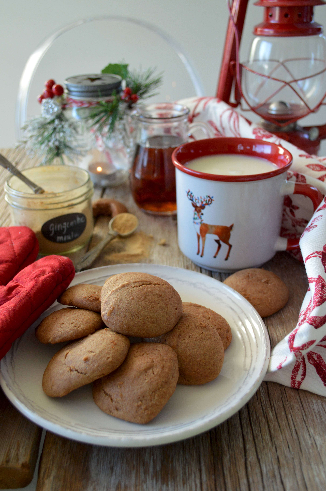

The secret to these easy holiday cookies is using melted chocolate and oil instead of butter. The oil and chocolate allow the crinkle to form while baking. Play around with the spices and create an original combination!
In a medium bowl, sift together flour, baking powder, salt and spices and set aside. In a large bowl, combine vegetable oil, melted chocolate, sugar and vanilla with a wooden spoon.
Beat in eggs, one at a time. Fold in the flour mixture, cover with plastic wrap and chill for at least 2 hours.
Preheat oven to 350°F. Line cookie sheets with parchment paper. Sift icing sugar into a wide shallow bowl. Drop chilled dough by tablespoons into icing sugar and roll to form into a ball. Place cookies about 2” apart on cookie sheet.
Bake cookie 8-10 minutes, until just set. Take care not to overbake. Remove cookies to cooling rack immediately.
Servings: Makes about 30 cookies